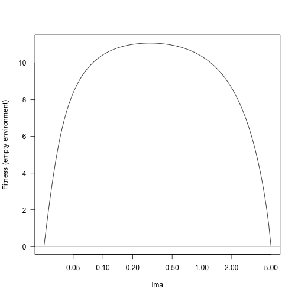
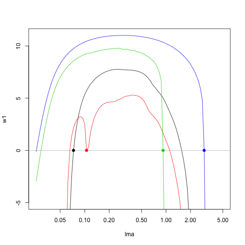
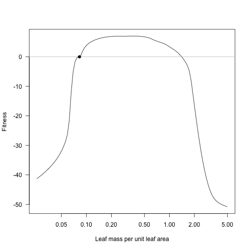
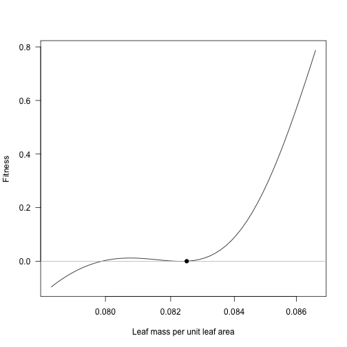
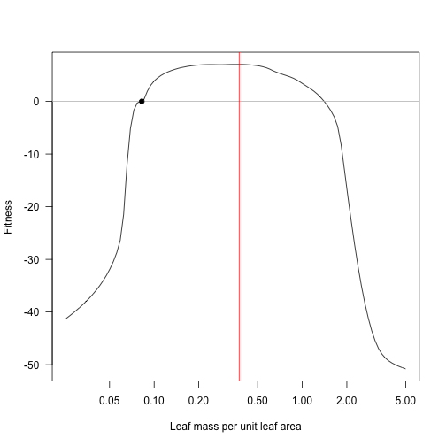
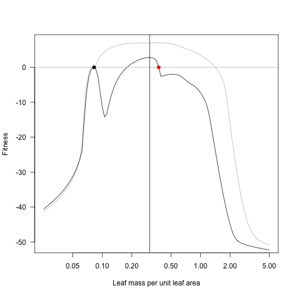
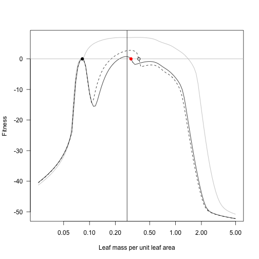
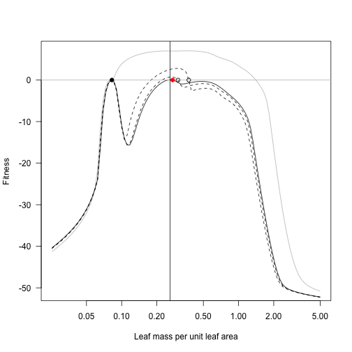
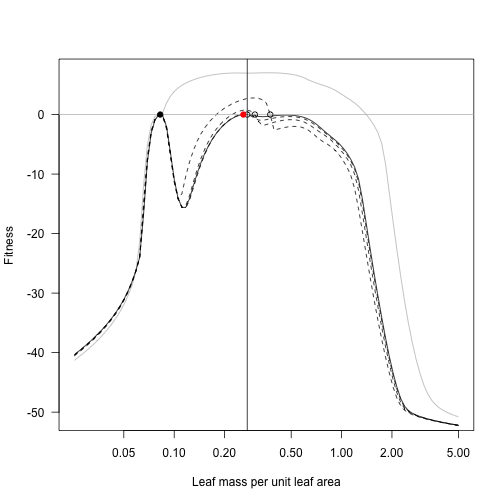

Start by setting a few parameters; this is the base set of parameters we’ll use.
p0 <- scm_base_parameters("FF16")
p0$control$equilibrium_nsteps <- 30
p0$control$equilibrium_solver_name <- "hybrid"
p0$disturbance_mean_interval <- 30.0First, compute the space that any strategy can exist along the “lma” axis:
## lower upper
## lma 0.02533822 4.989169Generate a set of trait values across this range and compute the fitness landscape:
lma <- trait_matrix(seq_log_range(bounds, 101), "lma")
w0 <- fitness_landscape(lma, p0)
plot(lma, w0, type="l", log="x", las=1, ylab="Fitness (empty environment)")
abline(h=0, col="grey")
Any trait value along this point can persist, so start with random sample (Set seed for random number generator so that get same results when rerun)
This function takes an lma value, introduces it to the community, runs that out to equilibrium seed rain:
add_eq <- function(x, p) {
p <- expand_parameters(trait_matrix(x, "lma"), p, mutant=FALSE)
equilibrium_seed_rain(p)
}If run interactively it will produce a lot of output
Then compute fitness landscapes for each of these:
w1 <- sapply(p1, function(p) fitness_landscape(lma, p))
matplot(lma, w1, lty=1, type="l", log="x", ylim=c(-5, max(w1)))
abline(h=0, col="grey")
points(lma1, rep(0, 4), col=1:4, pch=19)
For this system, there is an evolutionary attractor around lma 0.0825:
lma_b <- 0.0825
p1b <- add_eq(lma_b, p0)
w1b <- fitness_landscape(lma, p1b)
plot(lma, w1b, log="x", type="l", las=1,
xlab="Leaf mass per unit leaf area", ylab="Fitness")
abline(h=0, col="grey")
points(lma_b, 0, pch=19)
Zooming in in the vicinity of the result shows that this is disruptive selection: fitness increases to both sides of the resident!
lma_detail <- trait_matrix(seq_log(lma_b * 0.95, lma_b * 1.05, 51), "lma")
w1b_detail <- fitness_landscape(lma_detail, p1b)
plot(lma_detail, w1b_detail, log="x", type="l", las=1,
xlab="Leaf mass per unit leaf area", ylab="Fitness")
abline(h=0, col="grey")
points(lma_b, 0, pch=19)
Holding the first species at 0.0825 we can introduce additional species (it’s close enough to the optimum here, though in general this point might move substantially as new species are introduced).
Consider introducing a new species at the point of maximum fitness:
## [1] 0.3748389plot(lma, w1b, log="x", type="l", las=1,
xlab="Leaf mass per unit leaf area", ylab="Fitness")
abline(h=0, col="grey")
points(lma_b, 0, pch=19)
abline(v=lma_new, col="red")
After introducing this species, the fitness landscape is drawn down around the second species, with a fitness gradient that points towards increased lma.
plot(lma, w1b, log="x", type="l", las=1,
xlab="Leaf mass per unit leaf area", ylab="Fitness", col="grey")
lines(lma, w2)
abline(h=0, col="grey")
points(lma_b, 0, pch=19)
points(lma_new, 0, pch=19, col="red")
lma_new2 <- lma[which.max(w2)]
abline(v=lma_new2)
At the cost of extremely tedious copy/paste code, here is the result of repeatedly taking the lma value with highest fitness and moving the second species to this point, running to equilibrium, and plotting. For comparison the previous landscapes are retained as dotted lines.
p2_2 <- add_eq(lma_new2, p1b)
w2_2 <- fitness_landscape(lma, p2_2)
plot(lma, w1b, log="x", type="l", las=1,
xlab="Leaf mass per unit leaf area", ylab="Fitness", col="grey")
lines(lma, w2, lty=2)
lines(lma, w2_2)
abline(h=0, col="grey")
points(lma_b, 0, pch=19)
points(lma_new, 0)
points(lma_new2, 0, pch=19, col="red")
lma_new3 <- lma[which.max(w2_2)]
abline(v=lma_new3)
p2_3 <- add_eq(lma_new3, p1b)
w2_3 <- fitness_landscape(lma, p2_3)
plot(lma, w1b, log="x", type="l", las=1,
xlab="Leaf mass per unit leaf area", ylab="Fitness", col="grey")
lines(lma, w2, lty=2)
lines(lma, w2_2, lty=2)
lines(lma, w2_3)
abline(h=0, col="grey")
points(lma_b, 0, pch=19)
points(lma_new, 0)
points(lma_new2, 0)
points(lma_new3, 0, pch=19, col="red")
lma_new4 <- lma[which.max(w2_3)]
abline(v=lma_new4)
p2_4 <- add_eq(lma_new4, p1b)
w2_4 <- fitness_landscape(lma, p2_4)
plot(lma, w1b, log="x", type="l", las=1,
xlab="Leaf mass per unit leaf area", ylab="Fitness", col="grey")
lines(lma, w2, lty=2)
lines(lma, w2_2, lty=2)
lines(lma, w2_3, lty=2)
lines(lma, w2_4)
abline(h=0, col="grey")
points(lma_b, 0, pch=19)
points(lma_new, 0)
points(lma_new2, 0)
points(lma_new3, 0)
points(lma_new4, 0, pch=19, col="red")
lma_new5 <- lma[which.max(w2_4)]
abline(v=lma_new5)